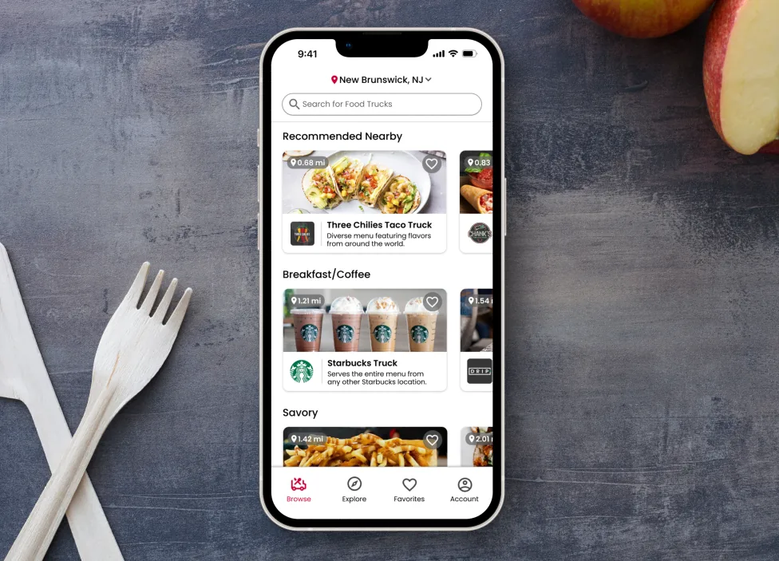
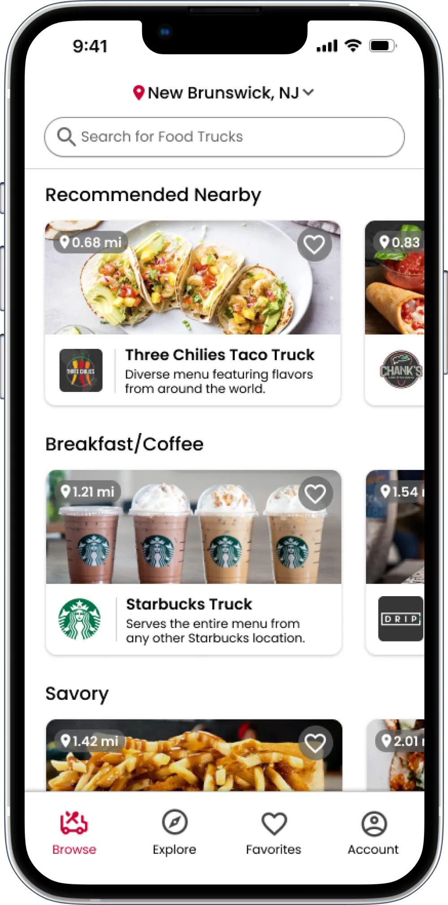
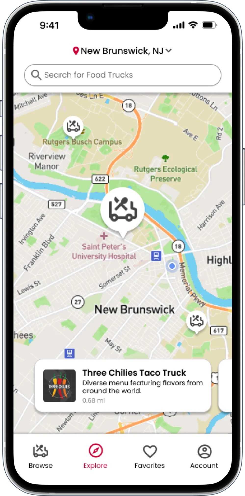
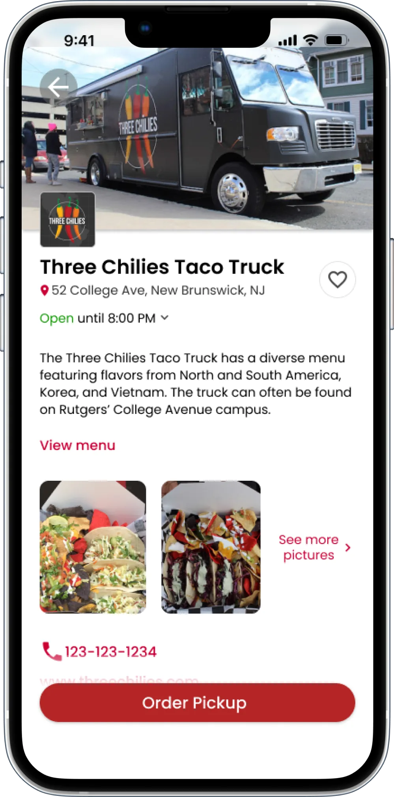
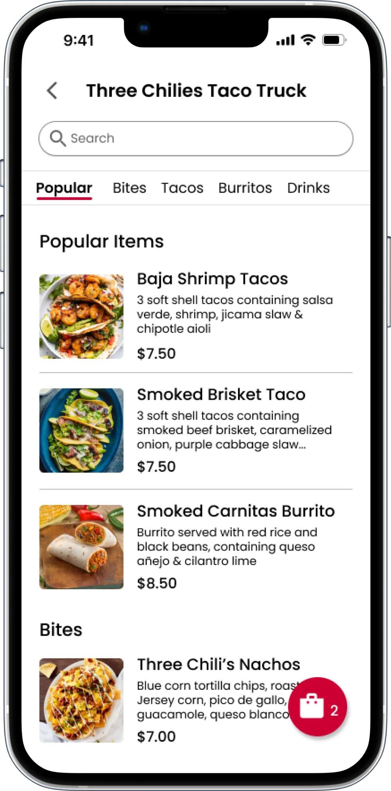
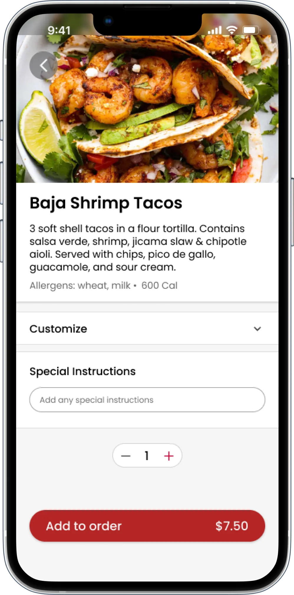
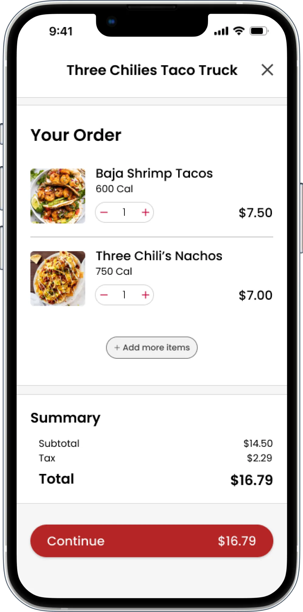
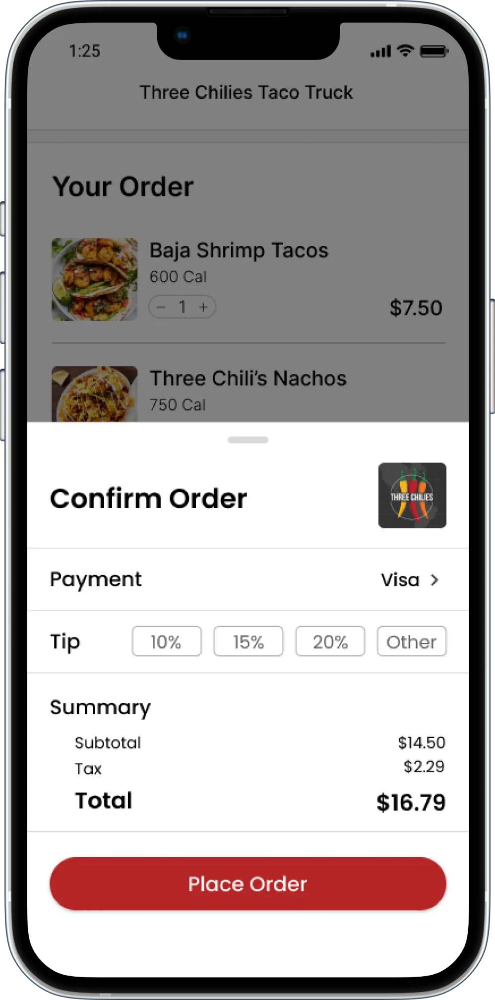
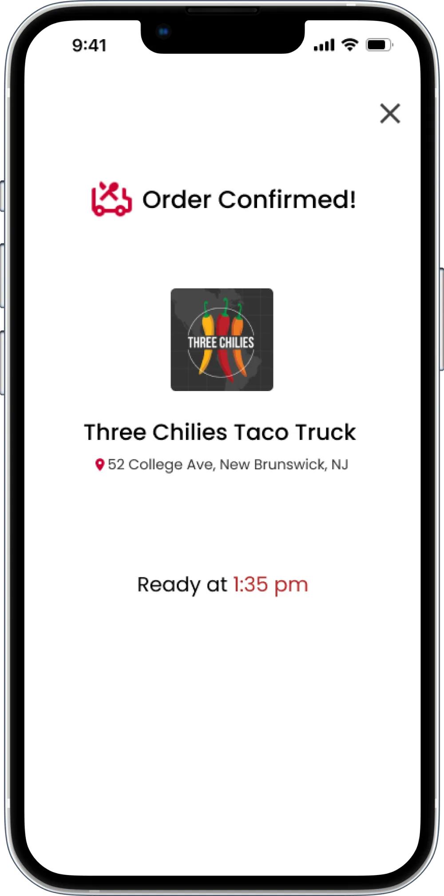

<!--
  StreetEats / Interface Design Showcase
  Reframed from ryanlayton.com/foodtrucks.html as a visual/UI craft page (NOT a process case study).
  Image-forward, minimal text, shorter than the UX case studies by design.
  Warm portfolio theme. Real images from ryanlayton.com. Same class names as the other pages.
-->
<meta charset="utf-8">
<meta name="viewport" content="width=device-width, initial-scale=1">
<title>StreetEats / Interface Design</title>
<link rel="preconnect" href="https://fonts.googleapis.com">
<link rel="preconnect" href="https://fonts.gstatic.com" crossorigin>
<link href="https://fonts.googleapis.com/css2?family=Playfair+Display:wght@500;600;700&family=Inter:wght@400;600;800&display=swap" rel="stylesheet">

<style>
  :root {
    --canvas: #F5F2EE;
    --ink: #141414;
    --slate: #5D737E;
    --olive: #707A5E;
    --warm-gray: #8D8D8D;
    --link-hover: #51656F;   /* slate, darkened to clear AA on canvas and field */
    --obsidian: #1A1A1A;
    --field: #EBE8E4;
    --hairline: #D8D3CB;
    --muted: #4C4A47;

    --container-max: 1200px;
    --gutter: 32px;
    --section-pad: 80px;
    --stack-sm: 8px;
    --stack-md: 16px;
    --stack-lg: 48px;
  }

  * { box-sizing: border-box; }
  /* The nav is fixed at 68px, and nothing offset the anchor targets, so every in-page jump
     (#work, #about, #contact, and the case-study nav links back to index.html#work) landed
     the target flush at the viewport top, underneath the nav. scroll-padding-top on the
     scroll container fixes all of them at once; per-element scroll-margin would need adding
     to every new anchor. 88px is the nav plus 20px of air. */
  html { scroll-behavior: smooth; scroll-padding-top: 88px; }
  body { margin: 0; background: var(--canvas); color: var(--ink); font-family: "Inter", sans-serif; -webkit-font-smoothing: antialiased; font-size: 16px; line-height: 26px; }
  img { display: block; max-width: 100%; }

  .padding-global { padding-left: var(--gutter); padding-right: var(--gutter); }
  .container-large { max-width: var(--container-max); margin: 0 auto; width: 100%; }

  .section { padding-top: var(--section-pad); padding-bottom: var(--section-pad); }
  .section--flush-top { padding-top: 0; }

  .display-name { font-family: "Inter", sans-serif; font-weight: 800; font-size: 80px; line-height: 0.98; letter-spacing: -0.02em; text-transform: uppercase; margin: 0; }
  .statement { font-family: "Playfair Display", serif; font-weight: 600; font-size: 44px; line-height: 52px; margin: 0; }
  /* HEADLINES ARE SANS. Playfair stays for the display and editorial moments — the 44px hero
     statement, pull quotes, stat numbers — but not for headlines, which are full sentences a
     reader actually reads. Ryan: "it's just hard to read actual content with this font".
     The tell was that .headline-lg is stepped DOWN to 36px inside a two-column row, i.e.
     Playfair used below the size a Didone wants, for layout reasons. Inter 600 with -0.02em
     tracking reads instantly and sits in a clear hierarchy under the Playfair statement. */
  .headline-md { font-family: "Inter", sans-serif; font-weight: 600; font-size: 30px; line-height: 40px; letter-spacing: -0.02em; margin: 0; }
  .body-lg { font-size: 20px; line-height: 32px; }
  .body-md { font-size: 16px; line-height: 26px; }
  .ui-label { font-size: 12px; line-height: 16px; font-weight: 600; letter-spacing: 0.1em; text-transform: uppercase; }
  .caption { font-size: 14px; line-height: 20px; color: var(--warm-gray); }
  /* FULL WIDTH, STACKED. These blocks were capped narrow (headings 24-26ch, prose 62ch) inside a
     1200px container, which left roughly half of every text section empty. Ryan asked for them
     stacked and spanning the full width, so the caps are gone. Hero statements keep their caps on
     purpose, since a deliberately short hero line is a different thing. */
  /* ONE reading measure, matching the other case studies. These two were left at max-width:none
     when the others moved to 78ch, so their hero paragraph ran the full 1200px container. */
  .measure { max-width: 78ch; }
  .hero-sub.measure { max-width: 62ch; }
  .mt-lg { margin-top: var(--stack-lg); }
  .text-muted { color: var(--muted); }

  .dot { width: 8px; height: 8px; border-radius: 50%; display: inline-block; flex: 0 0 8px; background: var(--warm-gray); }

  /* Hero */
  .hero { position: relative; padding-top: calc(var(--section-pad) + 68px); padding-bottom: var(--section-pad); overflow: hidden; }
  .hero-topo { position: absolute; top: -30px; right: -40px; width: 640px; max-width: 66%; opacity: 0.06; pointer-events: none; }
  .hero-eyebrow { display: flex; align-items: center; gap: var(--stack-md); color: var(--ink); margin-bottom: var(--stack-lg); }
  .hero-statement { margin-top: var(--stack-lg); max-width: 24ch; }
  .hero-sub { margin-top: var(--stack-lg); color: var(--muted); }

  /* Context strip */
  .context { display: flex; flex-wrap: wrap; border-bottom: 1px solid var(--hairline); }
  .context-item { flex: 1 1 200px; padding: 24px var(--gutter) 24px 0; }
  .context-item + .context-item { padding-left: var(--gutter); }
  .context-item .ui-label { color: var(--warm-gray); display: block; margin-bottom: var(--stack-sm); }
  /* Context-strip VALUES are data, not display: "UX Manager, full brand ownership",
     "~12 months", "Brand \u00b7 Web \u00b7 SEO". They were Playfair at 20px, which is the same
     Didone-too-small problem as the old figure titles and headlines, and it sat directly
     under the hero. Inter 500 at 19px. Playfair is reserved for the display and editorial
     moments now: the 44px statement, pull quotes, stat numbers, card titles, the footer. */
  .context-item .val { font-family: "Inter", sans-serif; font-weight: 500; font-size: 19px; line-height: 27px; letter-spacing: -0.01em; }

  /* Frames */
  .frame { background: var(--field); border: 1px solid var(--hairline); padding: 24px; display: flex; align-items: center; justify-content: center; }
  .frame img { width: 100%; height: auto; }
  .frame--bare { padding: 0; border: none; background: transparent; }

  /* Screen sets: image pair/trio rows with a single craft note */

  /* Phone mockups are portrait, and several are SMALL natively (showcase2 is 358px wide,
     gighubmock1 is 471px). Letting them fill a half-width column both oversized them and
     upscaled them past their own resolution, so they read blurry as well as huge.
     Capping HEIGHT handles portrait and landscape with one rule: a tall phone shrinks to fit,
     a wide screenshot is still bounded by max-width. width:auto is what guarantees nothing is
     ever scaled UP beyond its intrinsic size. The .frame is already a centering flex box, so
     a narrower image sits centred in its column with no extra rule. */
  .set-media img { width: auto; max-width: 100%; max-height: 640px; }
  .set { display: grid; grid-template-columns: 1fr 1fr; gap: var(--stack-lg) 64px; align-items: center; }
  .set + .set { margin-top: var(--section-pad); }
  .set--flip .set-media { order: 2; }
  .set-media .duo { display: grid; grid-template-columns: 1fr 1fr; gap: var(--gutter); }
  .set-title { margin-bottom: var(--stack-md); }
  .set-note { color: var(--muted); }
  /* ONE LABEL SYSTEM. Ryan: "they should all have the exact same style." The 12px uppercase
     label had drifted to five treatments across the site — ink, warm-gray, slate and olive —
     with no rule behind which was which, so the colour read as decoration. Two roles only:
     a label that NAMES the thing directly below it is var(--ink); a label that is quiet
     metadata bolted to an image or a data strip (.context-item, .shot, .state-item) is
     var(--warm-gray). No third colour. */
  /* .set-eyebrow is this page's section eyebrow — the same job .sec-eyebrow and .beat-eyebrow
     do elsewhere, and those are ink. It was warm-gray, so identical labels changed colour
     depending on which page you were on. */
  .set-eyebrow { display: flex; align-items: center; gap: var(--stack-md); color: var(--ink); margin-bottom: var(--stack-md); }

  /* Full-bleed screen rows */
  .row-duo { display: grid; grid-template-columns: 1fr 1fr; gap: var(--gutter); }

  .sec + .sec { border-top: 1px solid var(--hairline); }

  .close-actions { display: flex; gap: var(--stack-md); flex-wrap: wrap; }
  .btn { display: inline-flex; align-items: center; padding: 14px 32px; text-decoration: none; border: 1px solid transparent; }
  .btn-ghost { border-color: var(--ink); color: var(--ink); }
  .btn-ghost:hover { background: var(--ink); color: var(--canvas); }

  a:focus-visible, .btn:focus-visible { outline: 2px solid var(--ink); outline-offset: 3px; }
  @media (prefers-reduced-motion: reduce) { html { scroll-behavior: auto; } }

  @media (max-width: 800px) {
    .set { grid-template-columns: 1fr; }
    .set--flip .set-media { order: 0; }
  }
  @media (max-width: 640px) {
    :root { --gutter: 24px; --section-pad: 40px; }
    .display-name { font-size: 44px; }
    .statement { font-size: 28px; line-height: 34px; }
    .headline-md { font-size: 25px; line-height: 33px; }
    .body-lg { font-size: 18px; line-height: 29px; }
    .context-item + .context-item { padding-left: 0; }
    .row-duo, .set-media .duo { grid-template-columns: 1fr; }
  }
  /* NAV */
  .nav { position: fixed; top: 0; left: 0; right: 0; z-index: 50; background: transparent; transition: background .3s ease, border-color .3s ease; border-bottom: 1px solid transparent; }
  .nav.is-scrolled { background: rgba(245,242,238,0.95); border-bottom: 1px solid var(--hairline); }
  .nav-inner { display: flex; align-items: center; justify-content: space-between; height: 68px; }
  .nav-name { font-weight: 600; font-size: 15px; letter-spacing: 0.02em; text-decoration: none; color: var(--ink); }
  .nav-links { display: flex; gap: 32px; }
  /* Nav hover is a COLOUR SHIFT, not a growing underline. --link-hover is the site's slate
     darkened from #5D737E: slate itself measures 4.46:1 on the canvas and 4.08:1 on the tinted
     hero, both under the 4.5:1 AA floor for 16px text. #51656F is the same hue and clears it on
     both (5.47:1 and 5.00:1). Focus is still handled by the global a:focus-visible outline, so
     removing the underline costs nothing for keyboard users. */
  .nav-links a { color: var(--ink); text-decoration: none; transition: color .2s ease; }
  .nav-links a:hover, .nav-links a:focus-visible { color: var(--link-hover); }
  @media (max-width: 640px) { .nav-links { display: none; } }
  /* Site footer, shared with the homepage. Added to every page so a reader who lands on a
     case study from search has the same way to reach Ryan as one who came through the home
     page. Uses only tokens every page already defines. */
  .footer { background: var(--obsidian); color: var(--canvas); }
  .footer-inner { display: flex; justify-content: space-between; align-items: flex-end; flex-wrap: wrap; gap: var(--stack-lg); }
  .footer .lets { font-family: "Playfair Display", serif; font-style: italic; font-weight: 500; font-size: 28px; }
  .footer .connect { font-family: "Playfair Display", serif; font-size: 22px; }
  .footer .links { margin-top: var(--stack-sm); }
  .footer .links a { color: rgba(245,242,238,0.6); text-decoration: none; margin-right: 16px; }
  .footer .links a:hover, .footer .links a:focus-visible { color: var(--canvas); }
</style>

<!-- NAV -->
<nav class="nav" id="nav">
  <div class="padding-global"><div class="container-large">
    <div class="nav-inner">
      <a href="index.html" class="nav-name">Ryan Layton</a>
      <div class="nav-links ui-label">
        <a href="index.html#work">Work</a>
        <a href="index.html#about">About</a>
        <a href="resume.pdf" target="_blank" rel="noopener">Resume</a>
      </div>
    </div>
  </div></div>
</nav>

<main id="top">

  <!-- HERO -->
  <header class="hero">
    <svg class="hero-topo" viewBox="0 0 600 600" fill="none" xmlns="http://www.w3.org/2000/svg" aria-hidden="true">
      <g stroke="#141414" stroke-width="0.5" fill="none">
        <path d="M40 300 C160 180 300 160 420 240 C520 306 560 420 500 520"/>
        <path d="M70 330 C180 220 310 200 430 275 C520 335 555 435 500 525"/>
        <path d="M100 360 C200 262 320 244 440 312 C520 362 550 448 500 528"/>
        <path d="M135 392 C225 306 332 290 448 350 C518 392 545 460 500 532"/>
        <path d="M175 424 C255 352 348 338 456 390 C516 424 540 470 500 536"/>
        <path d="M220 456 C290 398 366 388 464 430 C512 456 536 480 500 540"/>
      </g>
    </svg>
    <div class="padding-global"><div class="container-large">
      <div class="hero-eyebrow ui-label">Interface Design</div>
      <h1 class="display-name">StreetEats</h1>
      <p class="statement hero-statement">A full ordering experience for food trucks, designed end to end.</p>
      <p class="body-lg hero-sub measure">
        Food trucks are convenient by nature and hard to use in practice: locations change daily,
        menus live nowhere, and lines erase the convenience. StreetEats is a complete interface
        for finding a truck, learning its menu, and ordering ahead. This page is a tour of the
        screens themselves.
      </p>
    </div></div>
  </header>

  <!-- CONTEXT STRIP -->
  <section class="section section--flush-top">
    <div class="padding-global"><div class="container-large">
      <div class="context">
        <div class="context-item"><span class="ui-label">Focus</span><div class="val">UI &amp; visual design</div></div>
        <div class="context-item"><span class="ui-label">Context</span><div class="val">Solo project</div></div>
        <div class="context-item"><span class="ui-label">Scope</span><div class="val">Full ordering flow, browse to checkout</div></div>
        <div class="context-item"><span class="ui-label">Tools</span><div class="val">Figma</div></div>
      </div>
    </div></div>
  </section>

  <!-- HERO IMAGE -->
  <section class="section section--flush-top">
    <div class="padding-global"><div class="container-large">
      <div class="frame frame--bare"></div>
    </div></div>
  </section>

  <!-- SCREENS -->
  <section class="section sec">
    <div class="padding-global"><div class="container-large">

      <div class="set">
        <div class="set-media"><div class="duo">
          <div class="frame frame--bare"></div>
          <div class="frame frame--bare"></div>
        </div></div>
        <div class="set-text">
          <div class="set-eyebrow ui-label">01 / Discovery</div>
          <h2 class="headline-md set-title">Browse and explore</h2>
          <p class="body-lg set-note">Two ways into the same decision. The browse page organizes nearby trucks into food categories for craving-first discovery, while the map leans into the thing that makes food trucks special: they're wherever you already are. I used the same card on both screens, so a truck feels consistent no matter how you found it.</p>
        </div>
      </div>

      <div class="set set--flip">
        <div class="set-media"><div class="frame frame--bare"></div></div>
        <div class="set-text">
          <div class="set-eyebrow ui-label">02 / The Truck Page</div>
          <h2 class="headline-md set-title">Everything a customer needs on one page</h2>
          <p class="body-lg set-note">Everything a customer needs to commit lives on a single screen: hours, location, menu, and the visual identity of the truck itself given room to breathe. I ordered the page to answer questions the way people actually ask them.</p>
        </div>
      </div>

      <div class="set">
        <div class="set-media"><div class="duo">
          <div class="frame frame--bare"></div>
          <div class="frame frame--bare"></div>
        </div></div>
        <div class="set-text">
          <div class="set-eyebrow ui-label">03 / Ordering</div>
          <h2 class="headline-md set-title">Menus built for speed</h2>
          <p class="body-lg set-note">Menu items are grouped into categories with matching tabs, so browsing a long menu takes seconds. The item screen carries ingredients, calories, and allergen information, with full ingredient customization and special instructions, detail work that makes the experience inclusive without cluttering the happy path.</p>
        </div>
      </div>

      <div class="set set--flip">
        <div class="set-media"><div class="duo">
          <div class="frame frame--bare"></div>
          <div class="frame frame--bare"></div>
        </div></div>
        <div class="set-text">
          <div class="set-eyebrow ui-label">04 / Checkout</div>
          <h2 class="headline-md set-title">A cart that always has a next step</h2>
          <p class="body-lg set-note">A persistent floating button keeps the current order one tap away from anywhere. The order screen lets every aspect of the order be edited in place, no backtracking through the menu, and the final overview confirms price and payment before anything is placed. Checkout patterns people already know, executed cleanly.</p>
        </div>
      </div>

      <div class="set">
        <div class="set-media"><div class="frame frame--bare"></div></div>
        <div class="set-text">
          <div class="set-eyebrow ui-label">05 / Confirmation</div>
          <h2 class="headline-md set-title">The handoff to the real world</h2>
          <p class="body-lg set-note">Order confirmed. The truck's address is a live link that opens the user's default maps app, closing the loop between the interface and the sidewalk where the food actually is.</p>
        </div>
      </div>

    </div></div>
  </section>

  <!-- CLOSE -->
  <section class="section sec">
    <div class="padding-global"><div class="container-large">
      <p class="body-lg measure text-muted">
        StreetEats began as an app for the Rutgers food trucks and grew into a platform for food
        trucks anywhere, a full product designed solo, from the first sketch to the confirmation
        screen.
      </p>
      <div class="close-actions mt-lg">
        <a href="index.html#work" class="btn btn-ghost ui-label">Back to work</a>
      </div>
    </div></div>
  </section>

</main>


<footer class="section footer" id="contact">
  <div class="padding-global">
    <div class="container-large">
      <div class="footer-inner">
        <div class="lets">Let&rsquo;s get in touch</div>
        <div>
          <div class="connect">Connect</div>
          <div class="links caption">
            <a href="https://www.linkedin.com/in/laytonryan" rel="noopener">LinkedIn</a>
            <a href="mailto:ryanlaytondesign@gmail.com">Email</a>
          </div>
        </div>
      </div>
    </div>
  </div>
</footer>

<script>
  (function(){
    var nav = document.getElementById('nav');
    if (!nav) return;
    function onScroll(){ nav.classList.toggle('is-scrolled', window.scrollY > 20); }
    onScroll();
    window.addEventListener('scroll', onScroll, { passive: true });
  })();
</script>
